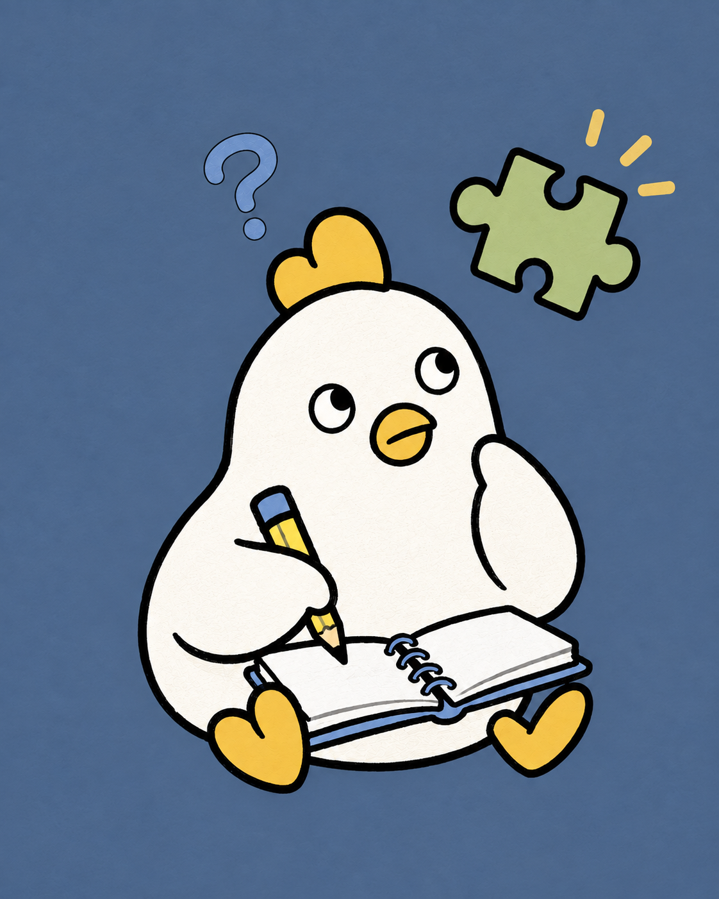

끝까지 파고듭니다.
좋아하는 일의 밀도를 높이고, 배운 것을 팀의 자산으로 남깁니다.

다들은 배움을 혼자만의 숙제로 두지 않습니다. 기술이 정답을 대신 말하는 데서 멈추지 않고, 사람이 스스로 설명하고 이해하며 앞으로 나아가게 만듭니다.
대표 서비스
가르쳐야만 배우는
나만의 AI 후배
설명하는 순간 비어 있던 이해가 보입니다. 다들 AI는 사용자가 가르친 내용만 기억하고, 질문과 시험으로 배움을 자기 것으로 만들게 돕습니다.
직급보다 역할을, 완벽함보다 움직임을 믿습니다.
좋아하는 일의 밀도를 높이고, 배운 것을 팀의 자산으로 남깁니다.
확실해질 때까지 기다리기보다 작은 실험으로 가능성을 증명합니다.
각자의 판단을 존중하고, 선택한 일의 결과를 함께 책임집니다.
세 명의 개발자가 사람의 배움을 돕는 AI를 만들기 위해 같은 출발선에 섰습니다.
다음에 필요한 기술을
다들과 함께 만듭니다.